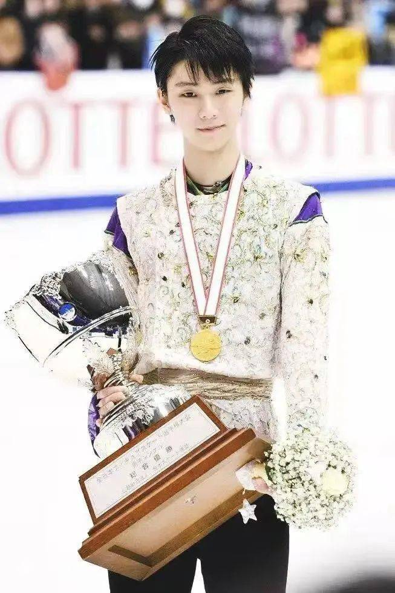

羽生结弦是日本花样滑冰选手，被誉为花滑王子，他是国际滑冰联盟（ISU）认可的国际比赛中完成后外结环四周跳的第一人，还是花样滑冰历史上包揽奥运会、世锦赛、大奖赛总决赛、四大洲锦标赛及世青赛、青年组总决赛等国际大赛男单项目冠军的超级全满贯第一人！
1
|
更多比赛介绍 || 返回主页 |
羽生结弦是日本花样滑冰选手，被誉为花滑王子，他是国际滑冰联盟（ISU）认可的国际比赛中完成后外结环四周跳的第一人，还是花样滑冰历史上包揽奥运会、世锦赛、大奖赛总决赛、四大洲锦标赛及世青赛、青年组总决赛等国际大赛男单项目冠军的超级全满贯第一人！ 1 |
|
羽生结弦，1994年12月7日出生于日本宫城县仙台市，日本花样滑冰男子单人滑运动员。 2004年，羽生结弦首次参加全国性比赛就获得了日本初级花样滑冰锦标赛B组冠军。 2006年，他在日本初级花样滑冰锦标赛A组获得铜牌；同年，在日本青年花样滑冰锦标赛获得第7名 。 2007年，羽生结弦参加日本初级花样滑冰锦标赛并获得A组冠军；同年，他在日本青年花样滑冰锦标赛上获得铜牌 。 2008年，羽生结弦初次登上ISU Junior Grand Prix赛场，以短节目第6、自由滑第4，总分排名第5；同年，他参加全日本青少年花样滑冰锦标赛，以短节目57.52、自由滑124.92、总分182.17的成绩夺冠。 2009年，羽生结弦在JGP托伦杯和克罗地亚两站排名第一，顺利进入国际滑冰联盟（ISU）花样滑冰大奖赛青少年组总决赛，并最终获得冠军。 2010年3月7日，他参加世界青少年花样滑冰锦标赛，短节目排名第3，凭借自由滑实现逆转，成为日本第四位世青赛冠军 。  ❄️成人组时期 2010年，羽生结弦正式升入成人组，参加的首站比赛是大奖赛系列的NHK日本站，他首次在国际滑冰联盟（ISU）自由滑比赛中完成后外点冰四四周跳，总分排名第4；在随后俄罗斯站，总分排名第7；年底进行的全日本锦标赛中，羽生结弦由于自由滑失误较多，综合排名第4 。 2011年2月，羽生结弦参加四大洲花样滑冰锦标赛，短节目和自由滑同时刷新了个人最好成绩，获得银牌 ；11月3日，羽生结弦在大奖赛中国站短节目比赛中刷新个人最好成绩，自由滑则因两个勾手三周跳失败，总分排名第4；11月25日，他参加花样滑冰大奖赛俄罗斯站比赛，虽然在短节目和自由滑中均出现失误，仍双双刷新个人最高纪录，夺得他的首个成年组冠军；12月10日，羽生结弦参加世界花样滑冰大奖赛总决赛，自由滑最后一个内结环三周跳落冰不佳，总成绩排名第4 ；12月22日，他在全日本锦标赛中虽然出现跳跃失误，但仍以88分的技术分和79分的艺术表现分刷新个人最好成绩，拿到铜牌。 2016年10月1日，在花样滑冰加拿大“Autumn Classic”挑战赛男单短节目比赛中，羽生结弦成功完成了后外结环四周跳（4LO），成为男单历史上第一个在正式比赛中完成该跳跃且跳跃执行分为正的选手 ；11月，羽生结弦在花样滑冰大奖赛日本站上，以301.47分的总成绩夺得冠军；12月，羽生结弦参加花样滑冰大奖赛总决赛，凭借在短节目中的领先优势，最终以293.90的总成绩夺冠，成为第一位在花滑大奖赛总决赛中赢得四连冠的男子单人滑选手 。 2022年7月19日17时，日本花样滑冰运动员羽生结弦在东京召开发布会，宣布今后不再参加比赛，但将继续做一名职业花样滑冰运动员。 2022年7月21日，羽生结弦申请退出日本国家队，不再代表日本国家队出战，同时也不再享受日本国家队选手的待遇。 2022年9月30日，羽生结弦退役后的首次冰上表演确定，题为“序曲”的表演将首先于11月4日在横滨举行。 2022年11月4日，羽生结弦在横滨举行了退役后的首次冰上表演，题为“序曲”，还表演了一段最新编排的动作，名叫“梦终醒来”。 2022年12月2日，羽生结弦在青森县八户市举行个人冰上表演。 2022年12月5日，羽生结弦在青森县八户市迎来其首次单独公演“序章”的千秋乐表演。在表演结束后透露，2023年2月26日还会在东京巨蛋体育馆进行名为“礼物（GIFT）”的公演。 |